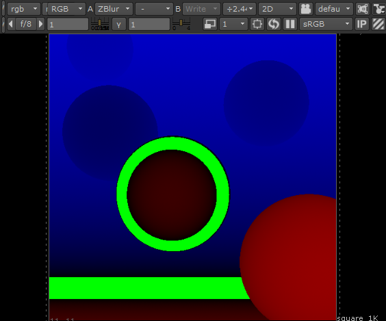

美景渲染与 zdepth_ AOV 合成
在本简短教程中，我们将介绍设置和渲染出“Z”深度 AOV 的过程，随后可以在 Nuke 中将此 AOV 与美景渲染合成，实现逼真的景深效果。“Z”深度 AOV 包含着色点的深度信息。
要下载对应的场景文件，请单击此处。
要渲染和合成“Z”深度 AOV，必须执行以下操作：
首先，打开渲染设置(Render Settings)窗口，然后转到 AOV(AOVs)选项卡。创建一个 Z 深度 AOV。
在“AOV”(AOVs)下，新创建的“Z”AOV 右侧有一个向下箭头。单击此箭头，然后从菜单中选择“选择驱动程序”(Select Driver)。
启用“合并 AOV”(Merge AOVs)以将 AOV 存储在一个 EXR 文件中
如果在 Photoshop 中打开多层 EXR，必须使用 32 位进行操作，因为如果将其转换为 8 位，将会丢失所有深度信息。Z 深度图像未进行区间限定，因此它可能显示为纯白色。转到“图像 -> 调整 -> 曝光”(Image -> Adjustments -> Exposure)，然后调整曝光，直到获得与常规 Z 深度过程类似的效果。
在 Nuke 中查看深度 AOV 时，它可能仅显示红色。深度通道将提供 Alpha 通道中所需的非抗锯齿、非归一化的深度数据。非归一化意味着 Z 深度值未介于 0 到 1 之间（摄影机前方距离），因此必须将 Z 值除以远剪裁平面值以获得介于 0 到 1 之间的值。仅当在查看器中查看深度通道时，才需要此重映射。zdefocus 节点无需此重映射也可以工作。
在 Nuke 中查看 Z 深度通道
将“Zblur”（Nuke 7 中为“ZDefocus”）连接到 EXR 渲染，然后启用“焦平面设置”(focal-plane setup)。Zblur 节点的默认设置应该已足够。应将 Z 设置为“depth.z”，并将“数学”(math)设置为“深度”(depth)（深度通道中的 Z 值是摄影机前方距离）。
调整“焦平面”(focus plane)，直到绿色区域位于您想要聚焦的区域。红色代表具有较小景深的区域。蓝色代表位于景深区域外部的区域。绿色代表位于景深区域内部的区域。如果将深度参数设置为 0，将无法看到任何绿色。
|  |
| 启用“焦平面设置”(focal-plane setup)（绿色区域位于聚焦处） |
此简短教程到此结束。很明显，使用 Z 深度 AOV 的优势在于速度和灵活性。能够在合成器中实时更改景深，这是一大优势。要想使用真实景深进行渲染，并在多数情况下呈现较好的效果，可能需要大量 AA 采样才能解决噪波问题。下面比较了使用真实景深进行渲染和未使用 DOF 渲染场景（使用合成的“Z”深度 AOV）的效果。即使“摄影机(AA)”(Camera (AA))采样数为 8，使用真实景深渲染的图像在较深的景深区域仍然有一些噪波。在本例中，相较于使用 Z 深度 AOV 渲染图像，使用真实 DOF 进行渲染所用时间大约是前者的两倍。
| 使用 Z 深度 AOV 合成 DOF | 真实 DOF（AA 采样数：8） |
使用“Z”深度 AOV 时存在一些限制。例如，无法聚焦在镜子中反射的物体上（请参见下图）：
无法使用 2D“Z”深度 AOV 聚焦在镜子中的物体上（上图使用真实景深进行渲染）。
3D 扫描模型来源：Ten24。